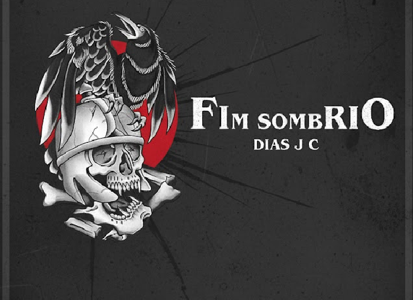

Sinopse

Imagine despertar em um lugar arruinado, sob um eclipse vermelho que transforma o céu em sangue. Você não lembra quem é, nem de onde veio. O frio consome sua pele, a fome o corrói, e a sede o enlouquece.
A única coisa que ecoa na sua mente são as palavras de uma mulher vestida de preto:
“Você deve sobreviver. Você deve. Para sempre!”
Agora, você caminha por um mundo medieval em ruínas, cercado por criaturas deformadas e vozes que sussurram nas sombras. Busca uma saída, uma resposta, qualquer coisa que o liberte deste tormento — mas, aos poucos, percebe que talvez o verdadeiro pesadelo não esteja à sua volta… e sim dentro de você.